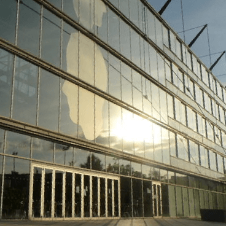

Resume
Stuff I'm proud of!
-
2015 - , Oakland, California
Software Engineer, Data Scientist at Vehicle Data Science
I build maps for self-driving cars, providing reference trajectories and complex intersections maneuvers at lane level precision. I use Python, PostGIS, SQLAlchemy, Leaflet.JS, among others: fun times!
-
2014 - 2015, Berkeley, California
IEOR Graduate student at UC Berkeley
I exchanged in the Operations Research department, including PhD-level courses on Computational Optimization, Machine Learning, and Network Flows. And I loved it.
-

2013, Berlin, Germany
Executive Assistant at My Impact Education
My Impact is building a social learning platform to help people assess, build, and teach their skills. I wrote a US patent, supported the fundraising process and monitored the product launch.
-

2011-2014, Paris, France
MSc at Ecole des Ponts ParisTech
I graduated from the Industrial Engineering department, with a specialization in Operations Research and Innovation Management. I led the pilot project in Togo that debuted a complete Social Entrepreneurship course at Paris d.school.
(I also have a good old PDF resume for you, or a Linkedin profile if you prefer)